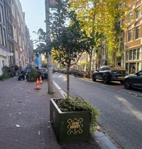

Wie zijn wij?
Floral Life is een website die helpt met het begroaning van de Spuistraat. om het mooier en groener te maken.
Hoe doen wij dat? Wat voor project doen we aan mee?
Lees hieronder verder!
De Spuistraat wordt mooier en groener
Denk mee over het groen in de straat! Groen geeft de straat een vrolijkere uitstraling en is goed voor de biodiversiteit en wateropvang.
Samen met zoveel mogelijk buurtbewoners en ondernemers gaan we de stoep en de stegen tussen de Spui en de Paleisstraat een opfrisbeurt geven. Woon of werk je in dit deel van de buurt dan zijn we enorm benieuwd naar hoe jij het graag groen zou willen zien. Een rozenplantsoen, bloembakken of weelderig groen?
Op 1 maart van 20.00-21.00 uur hebben bewoners en ondernemers van de buurt hun ideeën met ons gedeeld tijdens een interactieve online meedenksessie. Ideeën alom, en er is onwijs veel enthousiasme getoond voor de vergroening van de straat. Zo wordt de straat die iedereen gebruikt ook écht van iedereen en ziet het er veel leuker uit! Heb je nog meer goede ideeën of heb je de meedenksessie gemist? Dan kan je ook altijd contact opnemen met aukje@degezondestad.org.